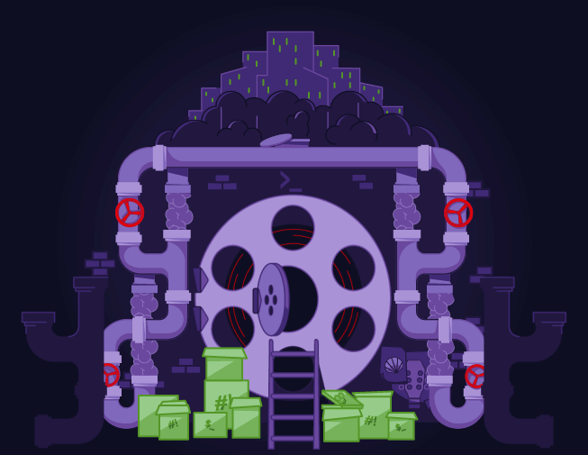

Subscribe to the podcast to receive new episodes as soon as we release them

Shells make large-scale IT possible. They’re a necessary component to modern computing. But it might not have turned out that way without a lot of hard work from a developer at the Free Software Foundation named Brian Fox. Now, the Bash shell is shipped with almost every computer in the world.
In the ‘70s, Bell Labs wanted to automate sequences of repetitive, complex commands. Chet Ramey describes how Bell developed several shells—but there could be only one officially supported shell for UNIX. Enter the Bourne shell. Though it was the best of that crop, the Bourne shell had its limits. And it was only available with a limited UNIX license. Brian J. Fox recounts his time at the Free Software Foundation where he needed to create a free—as in speech—version of the Bourne shell. It had to be compatible without using any elements of the original source code. That Bourne-Again Shell, aka Bash, is possibly the most widely used software in the planet. And Taz Brown describes how it’s one of the most important tools a developer can learn to use.
00:07 - Saron Yitbarek
It's 1987. Ronald Reagan's America is in full swing, and a 27-year-old high school dropout with big dreams is driving to his new home in Santa Barbara. That man's name is Brian Fox, and in the trunk of his car, he's got two massive tapes filled with the code he's been writing.
00:28 - Saron Yitbarek
Fox has spent years working as a programmer in something called the free software movement. He believes the code he's got locked in that trunk is part of a new reality, a new software paradigm, that his community is bringing to life, one piece at a time.
00:49 - Saron Yitbarek
That year, a team of coders at Richard Stallman's Free Software Foundation were trying to set the programming world free. They wanted to build an alternative to the UNIX operating system that had dominated programming since the '70s. Their GNU, which stood for GNU's not UNIX, was going to be an operating system for the people, one that anybody could use without worrying about license fees or copyright.
01:18 - Saron Yitbarek
The foundation had been cobbling this brave new operating system together for years. And those two massive tapes of code in the trunk of Brian Fox's car? They held a crucial component. Written on those tapes was a free and hackable shell that could complete the GNU operating system, Brian Fox's gift to the free software movement. He called it Bash.
01:46 - Saron Yitbarek
I'm Saron Yitbarek and this is Command Line Heroes, an original podcast from Red Hat. This episode, we're looking at our heroes in a Bash shell. We're uncovering the history of shells and why they're so crucial to our work today. Think of shell scripts like a script you would give an actor. They deliver a whole sequence of commands that the shell can then rattle off on its own, the same way an actor can read her lines one after another. It's the ultimate workaround if you've got repetitive or convoluted commands. It's the key to automation. You might say that shell scripting super charges our development. But could a shell be written that gave that superpower away to the whole world? That was the challenge.
02:38 - Ken Thompson
Back in 1969, a couple of computer scientists here at Bell Labs started to develop some programs they needed for their own use.
02:48 - Saron Yitbarek
That's pioneering command line hero, Ken Thompson. The UNIX operating system, designed at Bell Labs, really was intended for their personal use. Originally, it was just an internal system. UNIX encouraged close communication among programmers, but it wasn't intended to change the way the whole world worked. It was intended to change Bell Labs.
03:13 - Ken Thompson
By now, it's used all over Bell Labs. We have close to 20,000 computer terminals in this company, and most of them are used for communicating with UNIX systems.
03:25 - Saron Yitbarek
A UNIX shell designed by Ken Thompson was released in 1971. The Thompson shell was designed to be a command line interpreter, but it really wasn't capable of full-on scripting. It wasn't until six years later, in 1977, that scripting started to take off.
03:44 - Chet Ramey
The shell parameters, the special parameters, the variables that we sort of take for granted today, originated with Steve Bourne and the Bourne shell.
03:57 - Saron Yitbarek
That's Chet Ramey, an IT architect at Case Western Reserve University. Chet works at maintaining Bash, but he's also a great resource for our origin story. He describes Bell Labs just as it was figuring out what the UNIX shell was going to look like.
04:13 - Chet Ramey
The programming constructs that we use without thinking today originated with Steve Bourne, and his shell basically won the bake-off. There was a significant user community using the Mashey shell. There was a significant user community beginning to use the Bourne shell. There was a committee that was set up to decide which one would win, which one would be the officially supported UNIX shell coming out of Bell Labs from then on, and Bourne's shell won. And the rest, as they say, is history.
04:54 - Saron Yitbarek
It's not the end of history, though. Sure, the Bourne shell was a huge leap forward. It opened a door toward super-powered operations, toward greater automation, yet while there was a kind of Bourne supremacy for a while, the Bourne shell didn't solve all our scripting needs.
05:14 - Chet Ramey
The constraints under which Bourne wrote his shell are almost unimaginable today. Obviously, when you have those constraints, you have to give up a lot, and Bourne gave up a lot. It's remarkable that he was able to put as much into the Bourne shell as he did given the space, memory, and CPU constraints he worked with.
05:42 - Saron Yitbarek
And remember, the Bourne shell was still part of Bell Labs' UNIX system. It was still tied to the UNIX license. That meant it wasn't free. It wasn't open. This shell was owned.
05:55 - Chet Ramey
It was incredibly difficult to get UNIX source if you were not at a university. Obviously, that had an effect on the popularity of Berkeley UNIX, for instance, which started at a university, grew up among a community of universities, and kind of took off on the path of least resistance, as it were. So, getting access to the Bourne shell code was not difficult if you were at the right place, but in general, it wasn't viable.
06:36 - Saron Yitbarek
Chet Ramey is the maintainer of the Bash shell.
06:41 - Saron Yitbarek
So, we've got the beginnings of shells, the start of this crucial component to programming, but the best shell out there is tied to a license. It's closed. For Richard Stallman and his Free Software Foundation, that arrangement just wasn't okay. What was needed was a shell that wasn't tied to any one company, a shell for the people.
07:05 - Saron Yitbarek
But here's the trick. That meant writing something that did everything the Bourne shell could do without infringing on any of those pesky copyrights. Copy the Bourne shell's code verbatim, and you'd have a lawsuit on your hands.
07:20 - Saron Yitbarek
To free people from the Bourne shell, you'd have to find a coder with the ability to write a program that complex, a program that did everything the Bourne shell could do, but who hadn't actually seen any of the Bourne source code. You'd have to find a kind of outsider genius. And Richard Stallman had just the coder for the job.
07:46 - Saron Yitbarek
Brian Fox was a 20-something high school dropout who knew code better than most of the folks at Bell Labs. He'd never been in a position to see any of the source code that made the Bourne shell work, and that made him ideal for the task at hand.
08:02 - Brian Fox
My name is Brian Fox.
08:04 - Saron Yitbarek
I figured why not get the story from the man himself? These days, Fox is an open source advocate and the CEO of Opus Logica. But back in the late '80s, he was just a young guy who believed in the free software movement. We chatted about the old days and how Bash evolved from there.
08:23 - Saron Yitbarek
So Richard Stallman asks you to create a shell for UNIX. That one will be a free shell, and it's a replacement for the Bourne shell. What was your response to that request?
08:38 - Brian Fox
"Can't we make a better one?"
08:41 - Saron Yitbarek
I love that. Tell me more.
08:45 - Brian Fox
So the very first thing I did for Stallman was actually work on this tech info documentation system. I surprised Richard at the speed at which this type of programming would be done. He's a good programmer and he works quickly, but he doesn't judge that other people would work that quickly.
09:00 - Brian Fox
So, within the first week, I finished the first implementation of a program called GNU Info, and Richard was kind of stunned by that. I said, "What's my next project? What's my next project?" And he said, "Well, now do a compiler for this." And I did that, and I was done in a week with that, right? And then I said, "What's my next project? What's my next project?" And he said, "Well, this other guy's been working on this shell, but he hasn't gotten very far." I was like, "Okay," and nine months later, the Bourne replacement shell was done.
09:29 - Saron Yitbarek
Nine months. Wow. Tell me about that. Why was it so challenging?
09:33 - Brian Fox
That's actually a fascinating question. The reason it was so challenging is because we had to faithfully mimic all of the behaviors of the Bourne shell, of Stephen Bourne's original shell, while at the same time being allowed to extend it and make a better tool for people to use.
09:51 - Brian Fox
While that was happening, I was in a quiet undercover argument with David Korn, the author of the Korn shell. The POSIX committee, which is the committee that says what's standard UNIX, they got involved and said, "Oh good, we need to find what the standard shell is," and 2 most important people on input for that were myself and David Korn. And David Korn had already written this shell called KSH, and every feature that he had put into KSH, he said, "That should be a standard feature," right? This would be easy for him than to have the most perfect POSIX shell, if it was simply his shell.
10:31 - Brian Fox
Some of those features were not good features, were not good choices and made the shell somewhat incompatible with the Bourne shell, or I felt were missed features, and so there were several discussions and arguments about that, and so building a POSIX-compliant shell that was 100% perfectly compatible with every single shell script that had ever been written for the Bourne shell took longer than 3 months.
10:54 - Saron Yitbarek
So, if you are designing something that not only replaces the Bourne shell, but also is trying to mimic every part of the Bourne shell, it sounds like you might've run into some copyright issues. How did you approach that?
11:08 - Brian Fox
In order to build true open source and free software, you have to do it in a clean room. You can't look at somebody else's code, start from there, and re-implement it. So I'd never seen any of the software associated with any Bell systems, UNIX or even Berkeley UNIX, I'd never seen the source code for any of these things.
11:29 - Brian Fox
When I started building the Bash shell, I used a parser called Bison, which was something that Richard had started to put together at the Free Software Foundation, and that was completely different from basically any other program that had come before it. So I knew already that the thing I was building was not ever going to be a copyright infringement on something that had been built previously.
11:55 - Saron Yitbarek
The work to create Bash had plenty of hiccups. Here is just one example, for the hardcore heroes out there.
12:03 - Brian Fox
At one point, I was working on implementing globbing in the shell. This is the wild card expansion that allows you to match a large number of files, for example. You could say star dot C, and that would match every file that had an extension of dot C.
12:17 - Brian Fox
So I worked on globbing for several hours, and I got it working, and I was excited about it. It was a good implementation. And in the course of creating this implementation, I had created a file in my directory called asterisk dot C, star dot C, and I thought, "Well, I should get rid of that file," and I typed in RM space, quote, star dot C, close quote, which in a modern shell, when you use the quotes, it means, "Do not expand this," and then I pressed return, and it was taking a long time for the prompt to come back because we're using Sun 350s and things are slow. And I realized, it's taking a long time because it's deleting all of the source files in this directory.
12:58 - Saron Yitbarek
Oh no.
12:59 - Brian Fox
Yeah. So I deleted the source to Bash at that point.
13:01 - Saron Yitbarek
Oh no.
13:04 - Brian Fox
Which-
13:05 - Saron Yitbarek
Oh my goodness, yeah.
13:06 - Brian Fox
Which caused me to just laugh kind of loudly for a really long time. I wasn't even slightly upset. And then over the next couple days, I typed it all back in. The code was completely fresh in my mind.
13:20 - Saron Yitbarek
Wow.
13:20 - Brian Fox
The problems had been solved. It was just a matter of putting it down into files.
13:25 - Saron Yitbarek
Okay. So most people would completely freak out at that moment. You laughed and you just said, "Oh, I guess I have to do it all over again." Why were you so calm?
13:35 - Brian Fox
It struck me as insanely absurd and very funny that I'm building this tool, and to make sure it's good to eat your own dog food, to make sure the tool works correctly, you use the tool while you're building it. But the tool didn't work correctly. I had not yet implemented quoting, and because I hadn't implemented quoting, this command that I casually typed did not do what I expected it to do, and I thought that was really funny.
14:06 - Saron Yitbarek
That's amazing.
14:08 - Saron Yitbarek
Even that story about a mistake speaks to Fox's brilliance, though. They say that Mozart finished symphonies in his head and then just had to write them down once he'd finished. Fox had a similar talent.
14:23 - Saron Yitbarek
So, when you were finally done and you got to deliver Bash, how did that feel?
14:27 - Brian Fox
Oh, it actually felt spectacular. So here's a story that I don't actually usually tell. It was about 8 months into building the shell. I knew I needed about a month before I'd be done, and another shell was released. ASH, an open source shell got released, and I was crestfallen because we had not released the Bash shell to anyone yet, so only a handful of people were using it. I knew it needed another month's worth of work and I thought, "Oh, this is terrible. All this energy and effort I've put in will not be appreciated. It might not even be seen," and so I was pretty distraught. I was not laughing.
15:13 - Saron Yitbarek
The proof was in the pudding, though. GNU's Bash was released in 1989 and became the default shell for Linux. Today, it saturates our whole computing experience.
15:25 - Saron Yitbarek
But it is everywhere. So many people use it every single day. It's on every single computer. How does it feel being the author of Bash?
15:34 - Brian Fox
Most of the time, I don't even notice that Bash is a thing other than a tool that I use in my daily life. I don't really think about it. Every so often, I'll walk into an Apple store and look around and think, "Wow, every computer in here is not only running software I wrote 27 years ago, or more now, it also has my name in it," and then I think, "Every computer on the internet, every server on the internet is running the Bash shell and has my name in it." And then Windows last year or the year before came out with the Power shell, which is Bash, and I was like, "Oh my goodness. My name is in every computer on the planet."
16:21 - Saron Yitbarek
I want you to really hear what Fox told me next, though, because it's so important. He was never trying to code his way through this global domination. He was trying to help, trying to help the culture of programming that he was part of.
16:37 - Brian Fox
I didn't set out to achieve some grandiose goal of being on everybody's computer. I wasn't interested in that at all. I wanted to make a useful piece of software and I expected it to have a kind of typical software lifespan of 3 - 5 years, not this kind of crazy 30-year term that it's had.
16:58 - Saron Yitbarek
Were you always so, frankly, so nonchalant about the impact that you've had on computing?
17:06 - Brian Fox
I'm proud that I wrote Bash and I have an ego, so I do things like accept podcast requests to talk about the shell.
17:14 - Saron Yitbarek
Thank you very much.
17:15 - Brian Fox
Thank you. But it is not something that is there in my everyday life. Fortunately, I'm just an obscure person, right? It is true that my software's running on everybody's computer in everybody's house and it's also true that nobody knows that, right? So I have plenty of anonymity, and the fact that the shell exists and that somebody wrote it and that person lives in Santa Barbara is getting more known, and I'm beginning to notice it more in my life. People sometimes come to see me play music and then tell me, "You're the guy that wrote the shell," and I feel a little like Keanu Reeves.
17:54 - Saron Yitbarek
Very cool. So you said that you didn't set out to make sure Bash is on every single computer. What did you set out to do? What were your hopes for Bash?
18:04 - Brian Fox
A useful replacement tool to be part of the project GNU and to help create this free open source operating system. I actually assumed that once we had finished creating this open source operating system, that the software on that system would advance and I would get a chance to create the kind of shell that I wanted to create, which would help people to advance the science in a manner of speaking.
18:35 - Brian Fox
I eventually came to the realization that the reason Bash was created was to in fact be backwards compatible with the entire world of UNIX that already existed, and that momentum has kind of kept it alive, which is another unique position to be in, that your tool is so fundamental, it's so much of a nut and bolt that it's not something that will be removed.
19:01 - Saron Yitbarek
Absolutely.
19:01 - Brian Fox
It's been a great feeling to know that I've created something of value in the world, something that other people are still using, and that is a good feeling. And then as I look at how that came about, I realize the more important thing is the words free software and open source are in everyday English, everyday language across the globe, and that certainly wasn't true on day one. That was a creation of the efforts that Richard Stallman and myself and others put in. And to be part of that movement, that's lucky to have been early, but it's also extremely satisfying when I look back at that and I think, "Wow, open source software exists, and I was a part of that."
19:50 - Saron Yitbarek
Brian Fox is the creator of the Bash shell and CEO of Opus Logica.
20:01 - Steve Bourne
I did hear about Bash, actually.
20:03 - Saron Yitbarek
That's Steve Bourne, creator of the Bourne shell, that Brian Fox worked to replace. We wanted to know what Bourne thought about Fox's work. Did he think of Bash, that born-again shell, as an open source clone of his own work? I mean, was he cool with Bash?
20:20 - Steve Bourne
The person that wrote it came up to me in a conference one day and gave me a t-shirt which said “Bourne again” on the front of it.
20:26 - Saron Yitbarek
That'd be Brian Fox.
20:29 - Steve Bourne
It was a friendly sentiment, and it was, "Well, I hope you don't mind, but I just rewrote your shell," and I said, "That sounds great," and he gave me a t-shirt.
20:38 - Saron Yitbarek
If there's one thing I've learned in the coding world, it's that everybody loves swag. Stephen Bourne, turns out, saw Bash as a necessary extension of the work he and others did at Bell Labs. There's no bitterness at all.
20:52 - Steve Bourne
There were things that people wanted to do in variable substitution and doing string management that I didn't do, but that were put into Bash, that people use a lot these days. The relationship between Bash and the original shell, my impression at the time was it was just a reimplementation of the language, and over time, it did have features added to it, so it did sort of progress beyond what I wrote, certainly in the string management area. I use it all the time now.
21:21 - Saron Yitbarek
Steve Bourne is creator of the Bourne shell and CTO at Rally Ventures.
21:32 - Saron Yitbarek
It's been many years now since Bash was stowed away in Brian Fox's truck on that long drive to Santa Barbara. In 2019, version 5.0 was released, and like Fox mentioned, Bash is now built into Linux, into Mac OS, and even into Microsoft Windows. As UNIX gives way to Linux, Bash has become a cornerstone of scripting in an open source world. It's fundamental to our automation.
22:02 - Taz Brown
It became almost crucial, as organizations got bigger, to use something that would allow us to get things done quicker. It became a necessity.
22:16 - Saron Yitbarek
Taz Brown is a Senior Ansible Automations Consultant at Red Hat, so she's well-acquainted with the value of Bash.
22:24 - Taz Brown
I definitely think that someone starting in the beginning stage of their career should definitely use Bash. Instead of using the GUI or graphical user interface, you would tend to be taken more seriously as an admin or as a DevOps person.
22:39 - Saron Yitbarek
And that's because a Bash coder will have one of those core skills that simply levels you up.
22:45 - Taz Brown
There's a value in learning scripting because it prepares you to be much more of a long-term sort of thinker when it comes to automation itself, because you can see how a script runs, then you can start to say, "Well, okay, I can do this. I can automate this task. I can automate this," and it starts to make you a different thinker and a different technologist.
23:09 - Saron Yitbarek
For the ops side of things, that automation has become indispensable. Sophisticated programs, applications, and tools are all being supported by legacy Bash code.
23:21 - Taz Brown
You don't have to reinvent the wheel, if you will. You can continue and just pull those in from a GitHub repository or wherever you store those particular files. Bash allows you to do that. Bash allows you to take those common tasks and allows you to scale across to, say, from 10 servers to 1000 servers.
23:42 - Taz Brown
The great thing about automation is once you have a plan in place, it allows you to do it at a very cost sort of efficient manner. It allows you to do things that would be impossible to do manually.
23:56 - Saron Yitbarek
And then, more recent arrivals, like Ansible®, which Taz Brown works on, can always be integrated with Bash to get the job done.
24:04 - Taz Brown
Things have evolved, but I don't think Bash is ever going to not be a tool that an admin would apply, especially if you want a quick automation.
24:14 - Saron Yitbarek
In the end, all this success can be traced back to the fact that it's a free and hackable program. Brian Fox's desire to give something to the world with no licenses, no strings, has been the key to Bash's success. In fact, he's not even calling the shots anymore. Hasn't for a long time. Here's Chet Ramey again, who's been maintaining Bash for decades.
24:38 - Chet Ramey
Brian had decided after releasing, I think, version 1.05 that he wanted to move on and work on other things. He had been given other assignments at the Free Software Foundation and he wanted to do things besides Bash, and I was the most active contributor. He and I worked together on a lot of new features. We worked together on a lot of bug fixes, and so when it came time for someone else to take over, I was the logical candidate.
25:16 - Saron Yitbarek
And Ramey will have to pass on the mantle, too, just like Fox, because Bash is bigger than any one maintainer.
25:25 - Chet Ramey
I started when I was 23, and Bash and I have kind of grown together. At some point, I will need to solicit a team. I will need to solicit folks who are willing and able to put the time in and move the shell forward.
25:46 - Saron Yitbarek
Bash, the born-again shell, will turn 30 next year, and it's showing no signs of shrinking away. Bash has ridden the free software wave, and then the open source wave, until it spread to every corner of the programming world. But it's amazing to remember that, at one point, it was just code on a tape in the trunk of Brian Fox's car. It was just a dream of a shell language that a few committed coders were willing to give away. Almost by accident, Brian Fox became a huge command line hero in the process.
26:23 - Saron Yitbarek
By the way, something's been bugging me, Brian Fox driving all that Bash code to Santa Barbara. Why the move? I mean, did he have a new job at some tech company, or?
26:34 - Brian Fox
I wanted to continue my music career, and I thought the best place to do that was where the weather was always about 72 degrees and there are no clouds in the sky and the beaches are beautiful.
26:45 - Saron Yitbarek
Nice. I like that reason better.
26:49 - Saron Yitbarek
Shoutout to Wayne A. Lee, who suggested our title for this episode, Heroes in a Bash Shell. Nice one, Wayne.
26:57 - Saron Yitbarek
Next episode, we take our interest in automation to a whole new level and look at the languages of AI with a special focus on John McCarthy's creation, LISP.
27:11 - Saron Yitbarek
Command Line Heroes is an original podcast from Red Hat. You can dive deeper into the story of Bash or any of the programming languages we covered this season, if you head over to the show's site at redhat.com/commandlineheroes.
27:28 - Saron Yitbarek
I'm Saron Yitbarek. Until next time, keep on coding.
Keep going
The birth of the BASH shell
Delve into the most widely used and de facto standard scripting language, its early inspirations as part of the Free Software Foundation, and its bright future.
A sysadmin's guide to Bash
Each trade has a tool that masters in that trade wield most often. For many sysadmins, that tool is their shell. Find out some of the tricks of the trade.
Enjoy this episode's artwork on your device
Download the Command Line Heroes artwork and set it as your background.
{kind=link}
{kind=link}
{kind=link}

Get the newsletter
After each episode drops, we'll send you commentary from the Command Line Heroes team, as well as links that help you take a closer look at the topics we cover. It's as simple as that.
Presented by Red Hat
For 25 years, Red Hat has been bringing open source technologies to the enterprise. From the operating system to containers, we believe in building better technology together–and celebrating the unsung heroes who are remaking our world from the command line up.